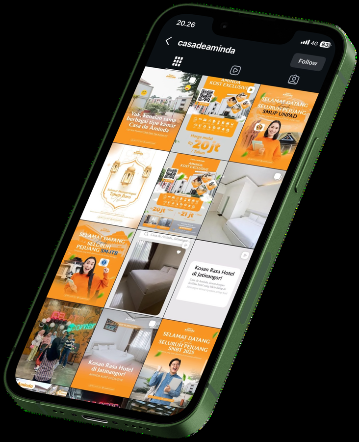

Lead Generation via Social Media
Casa de Aminda
Sebagai Social Media Specialist, saya mengoptimalkan Instagram dan Facebook sebagai etalase interaktif melalui penyajian informasi visual terstruktur guna mempermudah keputusan calon konsumen, meningkatkan okupansi properti, serta mencapai 40% kontribusi penjualan murni dari media sosial.
Strategi dieksekusi dengan menata feed dan highlight Instagram menjadi katalog interaktif, menyesuaikan gaya bahasa yang komunikatif bagi mahasiswa dan pekerja muda, mengelola pesan masuk secara cepat dan ramah untuk mengawal konversi, serta menghubungkan media sosial dengan saluran penjualan eksternal.
@casadeaminda